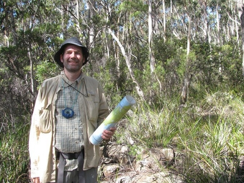

<!DOCTYPE html PUBLIC "-//W3C//DTD XHTML 1.0 Transitional//EN"
    "http://www.w3.org/TR/xhtml1/DTD/xhtml1-transitional.dtd">
<html xmlns="http://www.w3.org/1999/xhtml" xml:lang="en-au" lang="en-au">


<!--
  <link rel="stylesheet" href="//code.jquery.com/ui/1.11.4/themes/smoothness/jquery-ui.css">
  <script src="//code.jquery.com/jquery-1.10.2.js"></script>
  <script src="//code.jquery.com/ui/1.11.4/jquery-ui.js"></script>
  <link rel="stylesheet" href="./demos/style.css">
  <script>
  $(function() {
    $( "#dialog-message" ).dialog({
      modal: true,
      buttons: {
        Ok: function() {
          $( this ).dialog( "close" );
        }
      }
    });
  });
  </script>
-->
 

 
</body>
</html>

<head>

<meta http-equiv="Content-Type" content="text/html; charset=utf-8" />
<title>Dr. Kerry Nice, University of Melbourne / Monash University</title>

<script type="text/javascript"></script>
<link rel="stylesheet" href="http://assets.monash.edu.au/styles/monash.css" type="text/css" media="screen" />
<link rel="stylesheet" href="/assets/styles/arts.css" type="text/css" media="screen" />
<link rel="stylesheet" href="/assets/styles/print.css" type="text/css" media="print" />

<link rel="shortcut icon" href="http://www.monash.edu.au/favicon.ico" />
<meta name="author" content="tbolton" />

<meta name="keywords" content="urban,climate,modelling,australia,change" />
<meta name="dc.title" content="Kerry Nice"/>
<meta name="dc.identifier" scheme="uri" content="http://users.monash.edu.au/~kerryn/index.html"/>

</head>
<body>

<a name="content" id="skiplink"></a>
<!--   C O N T E N T   B E G I N S   -->
<div id="ges">
<h1>Dr. Kerry Nice</h1>

    
<div class="float-right">

</div>

<h2>Position</h2>
<br>Research Fellow (Transport, Health and Urban Design (THUD) research group, Faculty of Architecture, Building and Planning, University of Melbourne) </p>
<p> Research Fellow (Monash University/CRC for Water Sensitive Cities)


<h2>Contact</h2>
<br>Room 415, Level 4, Melbourne School of Design (Building 133), The University of Melbourne, Victoria 3010 Australia
<br>Building 28, Room No 230, Clayton, VIC


<br>
 <strong>Email: <a href="mailto:kerry.nice@unimelb.edu.au">kerry.nice@unimelb.edu.au</a></strong> <br />
<br> <strong>Research Gate <a href="https://www.researchgate.net/profile/Kerry_Nice/">profile</a></strong>
<br> <strong><a href="https://orcid.org/0000-0001-6102-1292">ORCID</a></strong>
<br> <strong><a href="https://www.findanexpert.unimelb.edu.au/display/person793479">University of Melbourne profile</a></strong>


</p>
<h2>Qualifications</h2>

<ul>
<li>PhD., 2017, Monash University. </li>
<li>M.E.S, 2011, Monash University. </li>
<li>B.A, 1990, University of Colorado, Boulder. </li>
</ul>

<h2>Research Topic:</h2>
<p>Urban micro climate modelling. Effects of water sensitive urban design (WSUD) on urban climates and human thermal comfort (HTC).
<p>Urban design, transport, health, and micro-climates. Urban green space typology. Neural network machine learning. Agent based modelling. 

<h2>Publications</h2>

<p>Nice, K. A., Coutts, A., and Tapper, N.J. (2018), Development of the VTUF-3D v1.0 urban micro-climate model to support assessment of urban vegetation influences on human thermal comfort. Urban Climate. http://dx.doi.org/10.1016/j.uclim.2017.12.008. <a href="files/VTUF-3DDesign.pdf">Journal article</a>

<p>Nice, K. A. (2016) Development, validation, and demonstration of the VTUF-3D v1.0 urban micro-climate model to support assessments of urban vegetation influences on human thermal comfort. PhD Thesis. Monash University. <a href="https://figshare.com/articles/Development_validation_and_demonstration_of_the_VTUF-3D_v1_0_urban_micro-climate_model_to_support_assessments_of_urban_vegetation_influences_on_human_thermal_comfort/4679413">Thesis</a>

<p>Nice, K. A. (2011), The micro-climate of a mixed urban parkland environment. Masters Thesis. Monash University. <a href="files/Nice - 2011 - The micro-climate of a mixed urban parkland environment - Unknown.pdf">Thesis</a>

<h2>Conference Presentations / Guest lectures</h2>


Kerry A. Nice, Jason Thompson, Jasper S. Wijnands, Gideon D.P.A. Aschwanden, Mark Stevenson. The ‘Paris-end’ of town? Urban typology through machine learning. In: AAG 2018, New Orleans, 12 April 2018.
<a href="files/KerryNice-ParisEnd.pdf">Presentation</a>

<p> Nice, KA. Urban Greening for improved human thermal comfort. In:
202020 Vision, The Green Light Tour, 27 March 2018, Adelaide, Australia.
<a href="files/Kerry Nice-Green Light Workshop-Adelaide-March 2018.pdf">Presentation</a>

<p> Nice, KA. Urban Greening for improved human thermal comfort. In:
Guest lecture - Master of urban planning STUDIO, University of Melbourne, 2 October 2017, Melbourne, Australia.

<p> Nice, KA. Microclimate Models and Application in the Urban Environment. In: 
Guest lecture - ATS3887/APG4887 - Designing Urban Futures: Urban Climate, Water and Adaptation. Monash University. September 2017 - Melbourne, Australia.

<p> Nice, KA.  Designing liveable cities through heat mitigation: tools to translate knowledge into design. In: 3rd Water Sensitive Cities Conference, 18-20 July 2017, Perth. <a href="files/CRCWSC_CONF2017 - Kerry Nice.pdf">Presentation</a>

<p> Nice, KA. Urban Greening for improved human thermal comfort. In: CRC for Water Sensitive Cities Ideas for Subiaco Water Resource Area, 24 May 2017, Perth. <a href="files/Subiaco workshop-micro climate.pdf">Presentation</a>
 
<p> Nice, KA, Coutts, A., Tapper, N., and Beringer, J.  A micro-climate examination of the temperature moderating potential of increased vegetation and water in urban canyons using VTUF-3D. In: 29th VUEESC Conference, 3-4 November 2016, Melbourne.  <a href="files/KerryNice-2016-11-VUEESCConference.pdf">Presentation</a>

<p> Nice, KA. Microclimate Models and Application in the Urban Environment. In: 
Guest lecture - ATS3887/APG4887 - Designing Urban Futures: Urban Climate, Water and Adaptation. Monash University. September 2016 - Melbourne, Australia.

<p> Nice, KA, Coutts, A., Tapper, N., Krayenhoff, S., Duursma, R., and Beringer, J.  A micro-climate examination of the temperature moderating potential of increased vegetation and water in urban canyons using VTUF-3D. In: Joint CRC Low Carbon Living &amp; CRC for Water Sensitive Cities Workshop on Urban Micro-Climates and Adaptive Urban Design, 21-22 March 2016, Melbourne. <a href="files/2016-03-CRC_Joint_workshop/KerryNice-2016-03-CRC_Joint_workshop.pdf">Presentation</a>

<p> Nice, KA, Coutts, A., Tapper, N., Krayenhoff, S., Duursma, R., and Beringer, J.  A micro-climate examination of the temperature moderating potential of increased vegetation and water in urban canyons using VTUF-3D. In: 2nd International Conference on Urban Tree Diversity, 22-24 February 2016, Melbourne. <a href="files/KerryNice-2016-02-MelbourneUrbanTreesConference.pdf">Presentation</a>

<p> Nice, KA, Coutts, A., Tapper, N., Krayenhoff, S., Duursma, R., and Beringer, J.  A micro-climate examination of the temperature moderating potential of increased vegetation and water in urban canyons using VTUF-3D. In: AMOS/ARCCSS National Conference 2016. 8-11 February 2016, Melbourne Convention and Exhibition Centre. <a href="files/KerryNice-2016-02-AMOS_Conference_Presentation.pdf">Presentation</a>

<p> Nice, KA. (Improved) micro-climate modelling assessment of the influence of water sensitive urban design on
human thermal comfort: Pre-submission presentation. Monash University. 17 September 2015 - Melbourne, Australia. <a href="files/KerryNice-2015-Pre-submitPresentation.pdf">Presentation</a>

<p> Nice, KA. Microclimate Models and Application in the Urban Environment. In: 
Guest lecture - ATS3887/APG4887 - Designing Urban Futures: Urban Climate, Water and Adaptation. Monash University. 16 September 2015 - Melbourne, Australia. <a href="files/Lecture%2013_2015.pdf">Presentation</a>

<p> Nice, KA, Coutts, A., Tapper, N., Beringer, J. and Krayenhoff, S.  VTUF-3D: An urban micro-climate model to assess temperature moderation from increased vegetation and water in urban canyons. In: 
2nd Water Sensitive Cities Conference 2015. 8-9 September 2015 - Brisbane, Australia. <a href="files/WSC2015Poster_KerryNice.pdf">Poster 1</a> <a href="files/WSC2015Poster2_KerryNice.pdf">Poster 2</a> <a href="files/WSC2015-KerryNicePresentation.pdf">Presentation</a>

<p> Nice, KA, Coutts, A., Tapper, N., Krayenhoff, S. and Beringer, J.  VTUF-3D: An urban micro-climate model to assess temperature moderation from increased vegetation and water in urban canyons. In: ICUC9 - 9th International Conference on Urban Climate 2015. 20-24 July 2015 - Toulouse, France. <a href="files/KerryNice-ICUC9.pdf">Presentation</a>

<p> Nice, KA, Tapper, N., Beringer, J.,Coutts, A. and Krayenhoff, S.  An urban micro-climate model for assessing impacts of Water Sensitive Urban Design. In: Water Sensitive Cities Conference 2014. 21-23 October, 2014 - Melbourne, Australia. <a href="files/WSC2014Poster_KerryNice.pdf">Poster</a>

<p> Nice, KA, Tapper, N., Beringer, J.,Coutts, A. and Krayenhoff, S.  An urban micro-climate model for assessing impacts of Water Sensitive Urban Design. In: 11th Symposium on the Urban Environment, 94th AMS Annual Meeting, 2-6 February 2014, Atlanta, GA. <a href="files/KerryNice-AMS2014-poster.pdf">Poster</a>

<p> Nice, KA, Coutts, A, Beringer, J, Tapper, N and Krahenhoff, S. Introducing the TUF-3D/MAESPA urban micro-climate model. In: 8th International Water Sensitive Urban Design Conference 2013. 25–29 November 2013 - Gold Coast, Australia. <a href="files/KerryNice-WSUD2013.pdf">Presentation</a> 

<p> Nice, KA, Coutts, A, Broadbent, A, Beringer, J, Tapper, N and Krahenhoff, S. Evaluation of WSUD modeling strategies. In: 8th International Conference on Urban Climate – ICUC 8 and 10th Symposium on the Urban Environment. 6th - 10th August 2012 - Dublin, Ireland. <a href="files/ICUC8Presentation.pdf">Presentation</a>

<p> Nice, KA and Isaac, P. The micro-climate of a mixed urban parkland environment [online]. In: WSUD 2012: Water sensitve urban design; Building the water sensitve community; 7th international conference on water sensitive urban design, 21 - 23 February 2012, Melbourne Cricket Ground. Barton, A.C.T.: Engineers Australia, 2012: 719-739. ISBN: 9780858258952. <a href="files/WSUDPresentation.pdf">Presentation</a>

<h2>Reports</h2>


<p> Nice, K. (2012), Urban climate model selection for modelling WSUD features.
Technical report, Cities as Water Supply Catchments, Project 3: Green Cities
and Micro-climate.


<h2>Grants</h2>

<p>2016 Graham Treloar Early Career Researcher Fellowship/ABP Research ECR Project Grant (The University of Melbourne) for the development of your project "Urban canyon mean radiant temperatures predictions through mining Google Street View imagery and neural network machine learning".

<p>&nbsp;</p>

  


</div>
<!--   C O N T E N T   E N D S   -->
	
</body>
</html>
